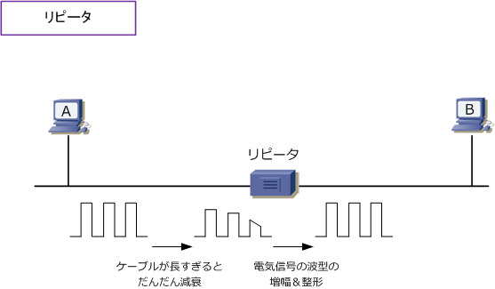
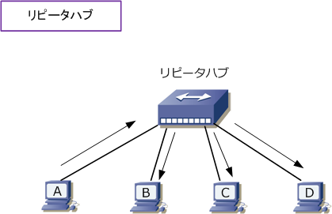
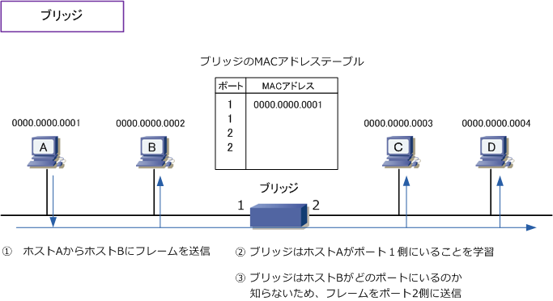
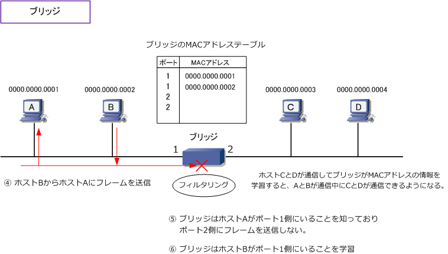
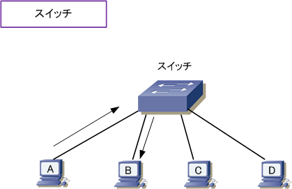
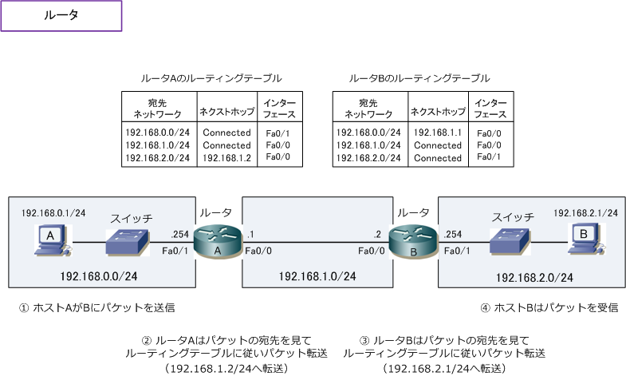
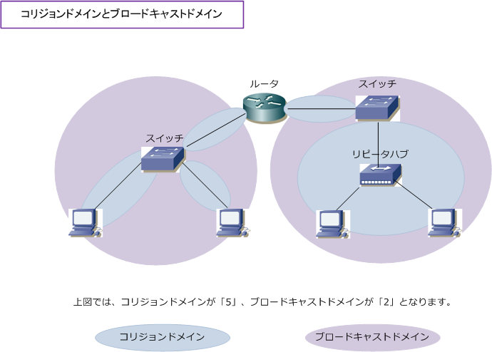

Ethernet LAN - Repeater / HUB / Bridge / Switch / Router
Ethernet LAN上でのネットワークデバイス
Ethernet LANでは多くのネットワークデバイスが存在します。リピータ、リピータハブ、ブリッジと いった現在では見られなくなった機器から、現在主流の位置づけのL2スイッチ、L3スイッチ、ルータ などの機器がEthernet LANにあります。今回は、これらのネットワークデバイスを紹介していきます。
リピータ ( Layer1のデバイス）
リピータはOSI参照モデルの物理層で動作する機器です。リピータはケーブルで流れる電気信号を増幅し 波形を整えてもう一方のインターフェースから電気信号を流します。10Base2や10Base5イーサネットで LANケーブルを延長したい場合に使用されていました。イーサネットLANにおいて電気信号は伝送距離が 長ければ長いほど信号がだんだん弱くなり減衰していきます。それにより電気信号にゆがみが生じる事で 正しくデータを受信処理できなくなる場合もあるので、ケーブル延長時には必ず使用していた機器でした。

リピータハブ ( Layer1のデバイス）
リピータハブはOSI参照モデルの物理層で動作する機器です。リピータと同様に電気信号の波形の増幅や 整形を行います。異なる点は、複数のポートを持ってる点とリピータハブに接続する場合は10Base-Tの ケーブルを使用する点です。リピータハブでは、端末がフレームを送信することで1つのポートで電気信号 を受信すると、電気信号の波形の増幅と整形後に他の全てのポートに電気信号を送信します。このハブは 他のハブと接続（＝カスケード接続）を行えますが、CSMA/CDの制約によって、10BaseTの場合4段まで （リピータハブ同士を4つ接続できる）、100Base-TXは2段まで（リピータ同士を2つ接続できる）です。

ブリッジ ( Layer2のデバイス）
ブリッジはOSI参照モデルのデータリンク層で動作する機器です。リピータ同様に電気信号の波形の増幅、 整形を行えるだけでなく、イーサネットフレームのヘッダを理解できます。イーサネットフレームヘッダ の宛先MACアドレスを見て、適切なポートにフレームを転送することができます。動作は以下となります。

このブリッジの動作ではブリッジのメリットが見えませんが、次のフィルタリングで利点が分かります。

上図のとおり、ブリッジはホストのMACアドレスを学習するとMACアドレステーブルに従いフレームを 転送するため無駄なトラフィックの発生を防いだり、コリジョンが起こりにくいので通信効率も上がる。 このように、ブリッジはコリジョンの発生範囲（コリジョンドメイン）を分割できるデバイスなのです。 ※ 当然ながら、この機器は10Base2や10Base5の時代の機器なのでリピータ同様に過去の遺物なので現在ではあまり見ません。
スイッチ ( Layer2のデバイス）
スイッチはOSI参照モデルのデータリンク層で動作する機器です。スイッチングハブまたはL2スイッチ とも呼ばれています。リピータハブは多くのポートがあるリピータであるのと同様、スイッチは多くの ポートのあるブリッジと考えてOK。ただしブリッジがフレームをソフトウェアにより処理するのに対し、 スイッチはハードウェア（ASIC)により処理するところが大きな違い。また、最近のスイッチの発展は 目覚しいものがあるのでメーカーにより非常に多くの機能を持っています。詳細は別途解説していきます。 ※ スイッチはフレームのヘッダ(MACアドレス）をみるため、ホストAとB間の送受信フレームはホストCやDに送信されません。

スイッチにはOSI参照モデルのネットワーク層で動作するL3スイッチがあります。L3スイッチはL2スイッチ の機能に加え、各ポートがルーティングできる機能を有しています。また、ルータよりもパケット処理能力が 高く、企業内のLANネットワークのコア機器として位置づけられるのが一般的です。ただし、ルータのように WAN接続（シリアルやISDN)などの機能や暗号化処理など高度なソフトウェア処理を行うことは出来ません。 ※ スイッチは多くのポートのあるブリッジであることから、スイッチもコリジョンドメインを分割できます。
ルータ ( Layer3のデバイス）
ルータはOSI参照モデルのネットワーク層で動作する機器です。ネットワーク層で動作する機器とはいえ ルータは物理層では電気信号の送受信を行い、データリンク層では、フレームヘッダのタイプをみること により上位層のプロトコルを識別をして、IPパケットの場合、ネットワーク層でパケットヘッダの「宛先 アドレス」をみてルーティングテーブル（パケットの配送先の経路情報）に従ってパケットを転送します。 ※ イーサネットLANではデータの単位をフレームと呼んでいますが、TCP/IPではデータの単位をパケットと呼んでいます。

ルータは、イーサネットだけではなくトークンリング、FDDI、ISDN、ATMといった色々なインターフェース を持つことが出来て、これによりイーサネットLANと様々な規格のデータリンク層との接続を実現しています。 ※ ここでいうインターフェースとは機器とケーブルが接続する部分のことです。「ポート」と呼ばれてたり「I/F」と略したりします。
コリジョンドメインとブロードキャストドメイン
ブリッジやスイッチは、データリンクを分割するので、コリジョンドメインを分割できる機器なのですが ルータもデータリンクを分割するので、ルータもコリジョンドメインを分割できる機器です。ルータの場合 ルータのインターフェースは別々のネットワークセグメントを割り当てることから、ブロードキャストも 分割することができるので、ルータはブロードキャストドメインを分割する機器でもあります。詳細は以下。
| デバイス | OSI参照モデル | デバイスの特徴 | コリジョンドメイン の分割 |
ブロードキャスト ドメインの分割 |
|---|---|---|---|---|
| ルータ | ネットワーク層 | 宛先IPを見てパケット転送 （様々なメディア間の接続可能） |
○ | ○ |
| L3スイッチ | ネットワーク層 | 宛先IPを見てパケット転送 （イーサネットLANでのみ使用可能） |
○ | ○ |
| L2スイッチ | データリンク層 | 宛先MACを見てフレーム転送 （ハードウェアで転送処理） |
○ | ×（※1） |
| ブリッジ | データリンク層 | 宛先MACを見てフレーム転送 （ソフトウェアで転送処理） |
○ | × |
| リピータハブ | 物理層 | 電気信号を増幅し信号転送 （集線装置） |
× | × |
| リピータ | 物理層 | 電気信号を増幅し信号転送 （中継装置） |
× | × |
※1 L2スイッチの各ポートに対してVLAN (Virtual LAN) を割り当てることによりブロードキャストドメインを分割できます。
